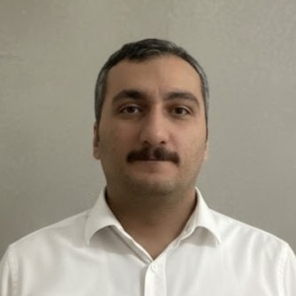

Welcome to my homepage.
My name is Ömer Karadağ. I am a full-time instructor in the Department of Architecture at Özyeğin University. I teach courses including Statics and Mechanics of Materials, Structural Analysis, and Structural Engineering for Architects. My research interests include construction materials, particularly cementitious composites, as well as the use of structural mechanics and material behaviour in architectural education.
I am currently seeking an assistant professorship to support my research and teaching in the field of materials and structures.
[ Institutional Email ] [ Personal Email ]
Last updated: March 2026 | You are visitor #